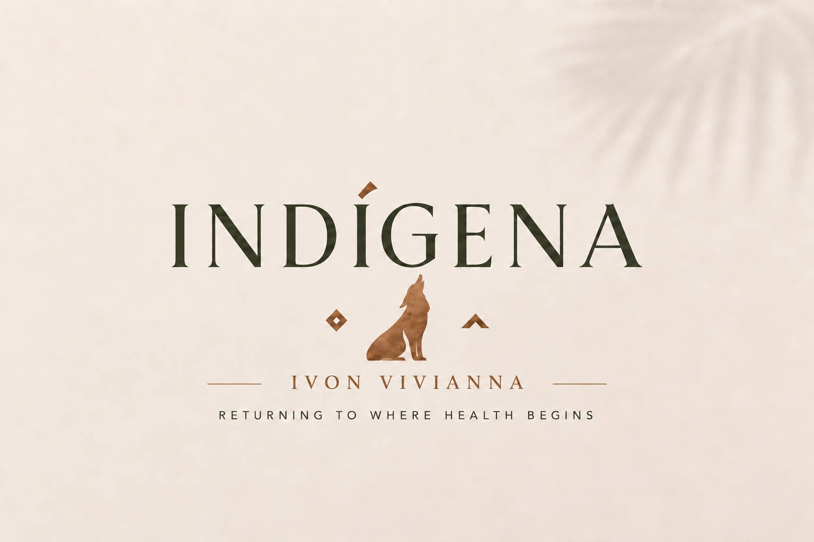

Discovery call
A complimentary conversation to explore your goals and see whether working together feels right.
Start here ↗INDÍGENA · Kauaʻi · Personalized nutritional therapy
Personalized nutrition and lifestyle guidance rooted in understanding your body, building sustainable habits, and caring for yourself with intention.
A collaborative path toward everyday well-being

A different way to begin
You deserve more than a one-size-fits-all list of things to do. Together, we look at your everyday rhythms, nutrition, and lifestyle to find practical ways forward.
Meet Ivon ↗The foundations
Health is shaped by the things we do consistently. INDÍGENA begins with the foundations and builds a thoughtful plan around your life.
Supportive food choices grounded in your needs and routines.
Understanding patterns and everyday practices that support digestive well-being.
Making room for sleep, restoration, and a sustainable pace.
Practical habits that fit your real life—not an idealized version of it.
Work together
A complimentary conversation to explore your goals and see whether working together feels right.
Start here ↗Three months of personalized education, practical recommendations, and accountability.
Explore the program ↗A more comprehensive pathway that may incorporate relevant assessment information.
See options ↗Meet your practitioner
Originally from Bogotá, Colombia, and now based on Kauaʻi, Ivon brings a deeply personal relationship with food, land, and everyday well-being to her work.
Read Ivon's story ↗Ready when you are